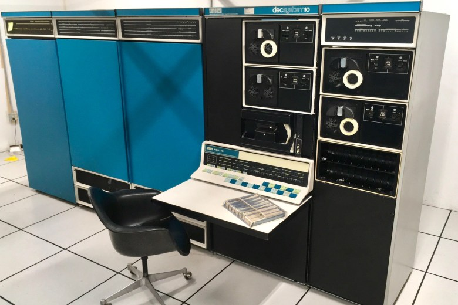
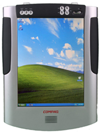
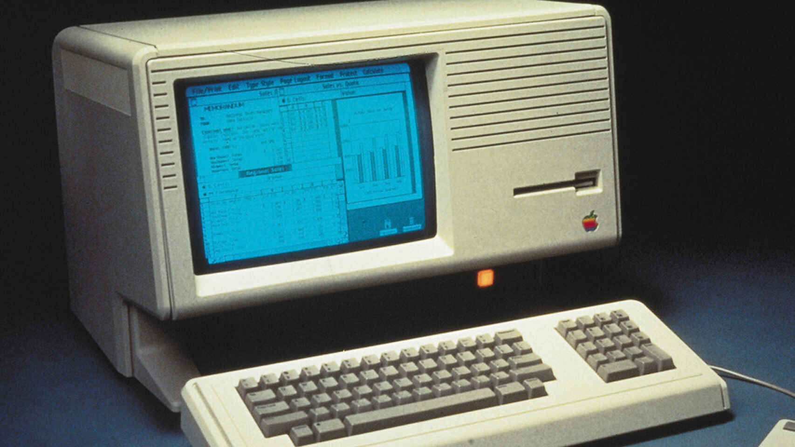
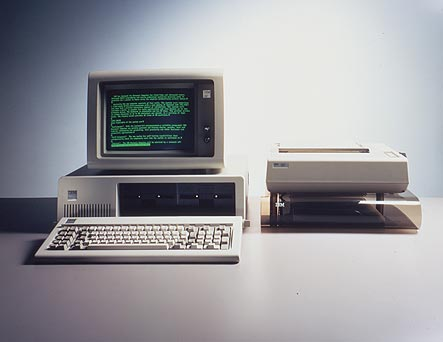

| Fundó la compañía de software Microsoft junto con Paul Allen |
|
| Desarrolló el sistema operativo MS-DOS en 1981, que posteriormente se convirtió en Windows 3.1 en 1992. Este sistema operativo evolucionó en múltiples versiones mejoradas que continúan integradas en multitud de ordenadores actuales. |
 |
| invención del microprocesador permitió abaratar y reducir el tamaño de las gigantescas computadoras existentes hasta entonce |
 |
| desarrollar su primer ordenador personal, la empresa IBM copió y adaptó la arquitectura abierta del ordenador de Apple |
|
| construcción de ordenadores. En 1976 crearon la compañía Apple. Y un año más tarde se comercializó Apple II, segunda versión del ordenador personal |
 |
| En 1980 Bill Gates acordó con IBM la creación de un sistema operativo adaptado a sus requisitos, el MS-DOS, y un año después IBM lanzó el PC (Personal Computer) |
 |